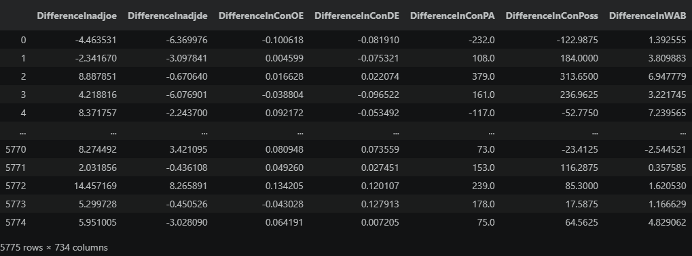
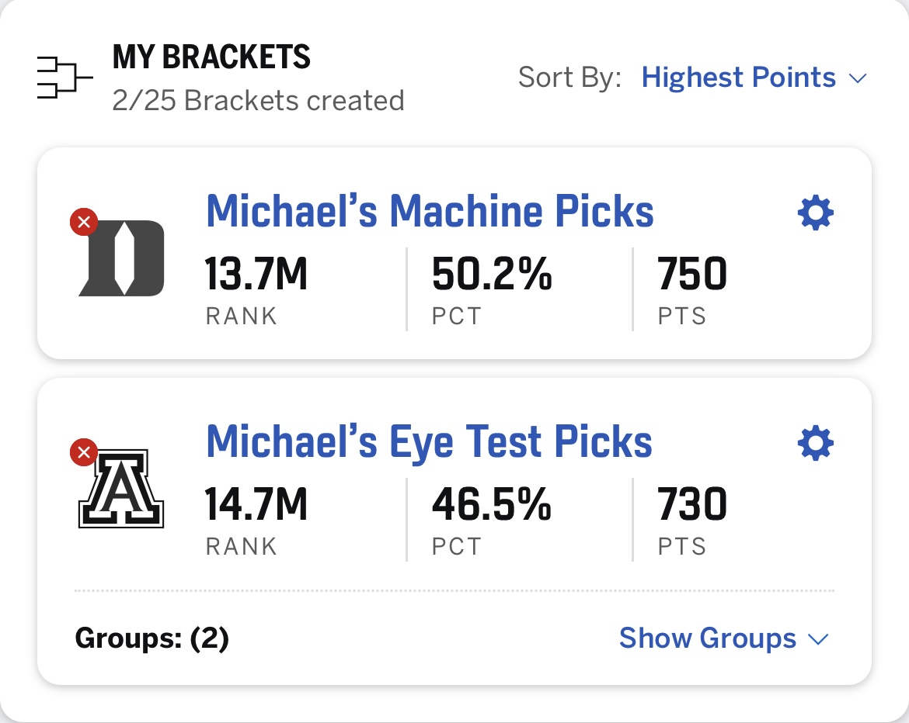

I've watched an embarrassing amount of college basketball this year. So when it came time for the NCAA tournament, I was excited to fill out my bracket and show the world my knowledge about this season's college basketball landscape. Additionally, since there is so much college basketball data readily available, I figured it wouldn't be too hard to use some python to construct a computer simulation. I named my personal bracket "Michael's Eye Test Picks" and dubbed my computer simulation "Michael's Machine Picks". Naturally, I wanted to compare these two brackets to see which would win.
The NCAA Tournament
The month of March is like Christmas for college basketball fans. After a 4-month regular season, teams are assembled into a postseason tournament known colloquially as "March Madness".
When the March Madness bracket is revealed, people around the globe predict what will transpire in the tournament by filling out a bracket. The tournament is notoriously unpredictable; it is not uncommon for smaller schools composed of future insurance agents to beat "blue-blood" schools composed of future NBA players. An underdog victory is known as an "upset" and they have caused many a bracket prediction to go awry.
Individuals who fill out brackets can join groups and compare their predictions with friends, family, and coworkers. For example, ESPN has a "Tournament Challenge" app that allows you to fill out a bracket online and check how your bracket holds up compared to your competitors. I was in two groups this year: one with my extended family and one with my coworkers.
College Basketball and Data Science
College basketball has become a playground for data science nerds such as myself. Everything about the sport is data-driven. There are multiple computer ranking systems (such as KenPom and NET) which play a direct role in deciding which teams make the postseason tournament and where they are seeded. When the postseason arrives, teams are evaluated based on their "resumes", which are composed in large part of their KenPom ranking, a quadrant system based on NET rating, and team metrics such as offensive and defensive efficiency. A committee synthesizes this data to create the bracket.
Data
There are a lot of gurus on the intersection between college basketball and data science, such as Evan Miyakawa TODO and Bart Torvik. They put in a lot of work assembling data and creating their own metrics to understand how data can be used to inform college basketball outcomes. For my computer simulation, I relied upon Bart Torvik's data, found here.
I used two datasets: one containing team-level data (one row per team) and one containing game-level data (one row per game). Both datasets only contained data from the 2025-2026 season.
Feature Engineering
I combined these two datasets together using the team name as the identifier. The result was a dataset containing game-level data. For each game, teams were assigned to be "Team1" or "Team2".
Each row contained dummy variables for each team (indicating whether a certain team was Team1, Team2, or neither), and then the following variables:
- Difference in adjusted offensive efficiency (Team1 - Team2)
- Difference in adjusted defensive efficiency
- Difference in offensive efficiency for conference play only
- Difference in defensive efficiency for conference play only
- Difference in points allowed during confernce play
- Difference in possessions during conference play
- Difference in wins above bubble
The resulting dataset (without the dummy variables) looked something like this:

The model was trained on the 2025-2026 regular season and conference tournament data. For each tournament matchup, I wrote some code that accepts two team names and spits out a data row for the model to predict. The outcome variable was a boolean indicating whether Team 1 won.
There are probably better ways to engineer this data. For example, some conferences have higher levels of competition than others, so comparing comference play data may be comparing apples to oranges. Nevertheless, I think the data works decently well as a representation of the season.
My Simulation
For my model architecture, I used sklearn's HistGradientBoostingClassifier.
A gradient boosting classifier iteratively constructs decision trees based on the errors ("residuals") of the previous iteration. These iterations are combined into one ensemble. Histogram gradient boosting is a special type of gradient boosting where continuous features are binned in order to speed up training time.
I chose the HistGradientBoostingClassifier because I felt that it has a good balance of high predictive accuracy and training speed. I didn't bother tuning any hyperparameters.
I wrote some code to simulate the tournament format (winner advances lower eliminated). Once the bracket was announced, I put the team names in the correct places, ran the simulation one time, and recorded the results. Then, as the actual tournament unfolded, I got to evaluate my picks compared to the simulation.
Results
(drumroll please)...

Machine learning wins! The computer simulation edged out my personal picks in a battle that turned out to be extremely mediocre. Both brackets ended up around the median. Once again, my hours in front of the TV watching college basketball did not pay off. I already knew AI might be better than me at my job; I didn't realize it was better than me at my hobbies too.
Conclusion
If you'd like to see my full code, visit My Github. In main.ipynb, you can see all the picks the simulation made. There were a few head-scratchers (Idaho over Houston, Miami OH in the Elite Eight), but who am I to judge? It performed better than I did.